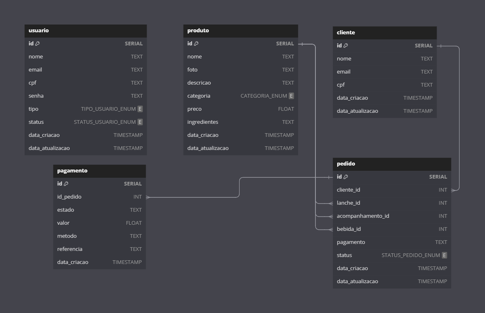

Detalhes do Banco de Dados¶
Escolha do PostgreSQL¶
Optamos pelo PostgreSQL como a solução de banco de dados para o sistema de autoatendimento após uma cuidadosa avaliação de diferentes formatos de bancos de dados. A decisão foi baseada na robustez, flexibilidade e no conjunto de recursos avançados que o PostgreSQL oferece, os quais se alinham perfeitamente com as necessidades complexas e em evolução do nosso projeto.
Em comparação com outras opções, o PostgreSQL se destacou por sua capacidade de lidar com dados complexos, extensibilidade, confiabilidade, suporte a concorrência, segurança avançada, recursos de pesquisa sofisticados, uma comunidade ativa e um modelo de custo eficiente. A seguir, detalhamos as razões que justificam essa escolha:
- Compatibilidade com Dados Complexos: O PostgreSQL suporta uma ampla gama de tipos de dados, incluindo tipos primitivos, como numérico, string e booleano, bem como tipos de dados mais complexos, como arrays, JSON/B, e tipos definidos pelo usuário. Isso é essencial para armazenar detalhes complexos de pedidos e preferências de clientes.
- Extensibilidade: O PostgreSQL é altamente extensível, permitindo definir funções, operadores e até tipos de dados personalizados. Isso facilita a adaptação e expansão do sistema conforme as necessidades do negócio evoluem.
- Confiabilidade e Integridade dos Dados: Conhecido por sua alta confiabilidade, o PostgreSQL suporta transações ACID, garantindo a integridade dos dados mesmo em caso de falhas do sistema.
- Suporte a Concorrência: Graças ao seu modelo de concorrência baseado em MVCC, o PostgreSQL pode processar muitas transações simultâneas sem bloqueios significativos, essencial para um sistema de autoatendimento que lida com múltiplos pedidos ao mesmo tempo.
- Segurança: Oferece um robusto sistema de controle de acesso baseado em funções e suporta autenticação forte e SSL, protegendo os dados contra acessos não autorizados.
- Recursos de Pesquisa Avançada: Com índices GIN e GiST, o PostgreSQL executa eficientemente consultas complexas, incluindo buscas em textos completos e operações geoespaciais, útil para análises avançadas e melhorias na interface de usuário.
- Comunidade e Suporte: Possui uma comunidade ativa e um vasto ecossistema de ferramentas e extensões, facilitando o suporte e acesso a recursos para desenvolvimento e manutenção.
- Custo: Sendo de código aberto, o PostgreSQL é gratuito, ajudando a reduzir os custos iniciais de desenvolvimento e implementação.
Modelagem¶

Entidades¶
usuario
- Chave Primária: id
- Atributos: nome, email, cpf, senha, tipo, status, data_criacao, data_atualizacao
produto
- Chave Primária: id
- Atributos: nome, foto, descricao, categoria, preco, ingredientes, data_criacao, data_atualizacao
cliente
- Chave Primária: id
- Atributos: nome, email, cpf, data_criacao, data_atualizacao
pedido
- Chave Primária: id
- Atributos: cliente_id, lanche_id, acompanhamento_id, bebida_id, pagamento, status, data_criacao, data_atualizacao
- Relações:
- cliente_id é uma chave estrangeira que referencia
cliente(id) - lanche_id, acompanhamento_id, bebida_id são chaves estrangeiras que referenciam
produto(id)
- cliente_id é uma chave estrangeira que referencia
pagamento
- Chave Primária: id
- Atributos: id_pedido, estado, valor, metodo, referencia, data_criacao
- Relações:
- id_pedido é uma chave estrangeira que referencia
pedido(id)
- id_pedido é uma chave estrangeira que referencia
Relacionamentos¶
pedidoparacliente: Um relacionamento de muitos para um (N:1), onde cada pedido está associado a um único cliente, mas um cliente pode ter vários pedidos.pedidoparaproduto: Um relacionamento de muitos para muitos (N:N), representado através das chaves estrangeiras lanche_id, acompanhamento_id, bebida_id em pedido, indicando que um pedido pode incluir vários produtos e um produto pode estar em vários pedidos.pagamentoparapedido: Um relacionamento de um para um (1:1) ou um para muitos (1:N), dependendo de como os pagamentos são gerenciados. Cada pagamento está associado a um único pedido, mas um pedido pode ter vários pagamentos se forem permitidos pagamentos parciais.
Tabelas¶
usuario¶
Projetada para armazenar informações essenciais sobre os usuários que interagem com o sistema, sejam eles funcionários da cozinha, administradores ou qualquer outro tipo de usuário que necessite de acesso ao sistema administrativo. Esta tabela é fundamental para o controle de acesso e a gestão de permissões dentro do sistema.
| Nome da Coluna | Tipo de Dado | Descrição |
|---|---|---|
| id | SERIAL |
Identificador único do usuário |
| nome | TEXT |
Nome do usuário |
TEXT |
E-mail do usuário | |
| cpf | TEXT |
CPF do usuário |
| senha | TEXT |
Senha do usuário |
| tipo | TIPO_USUARIO_ENUM |
Tipo do usuário (Admin ou Cozinha) |
| status | STATUS_USUARIO_ENUM |
Status do usuário (Ativo ou Inativo) |
| data_criacao | TIMESTAMP |
Data de criação do registro |
| data_atualizacao | TIMESTAMP |
Data de atualização do registro |
produto¶
Projetada para armazenar informações sobre os produtos oferecidos pela lanchonete, como lanches, bebidas, acompanhamentos e sobremesas. Esta tabela é essencial para o catálogo de produtos do sistema de autoatendimento, permitindo aos clientes visualizar detalhes como nome, descrição, preço e ingredientes de cada produto.
| Nome da Coluna | Tipo de Dado | Descrição |
|---|---|---|
| id | SERIAL |
Identificador único do produto |
| nome | TEXT |
Nome do produto |
| foto | TEXT |
URL da foto do produto |
| descricao | TEXT |
Descrição do produto |
| categoria | CATEGORIA_ENUM |
Categoria do produto |
| preco | FLOAT |
Preço do produto |
| ingredientes | TEXT [] |
Lista de ingredientes do produto |
| data_criacao | TIMESTAMP |
Data de criação do registro |
| data_atualizacao | TIMESTAMP |
Data de atualização do registro |
cliente¶
Projetada para armazenar informações sobre os clientes que utilizam o sistema de autoatendimento. Armazenar os dados dos clientes permite ao sistema oferecer uma experiência personalizada e facilitar o processo de pedidos.
| Nome da Coluna | Tipo de Dado | Descrição |
|---|---|---|
| id | SERIAL |
Identificador único do cliente |
| nome | TEXT |
Nome do cliente |
TEXT |
E-mail do cliente | |
| cpf | TEXT |
CPF do cliente |
| data_criacao | TIMESTAMP |
Data de criação do registro |
| data_atualizacao | TIMESTAMP |
Data de atualização do registro |
pedido¶
Essencial para o registro e acompanhamento dos pedidos realizados no sistema de autoatendimento. Vincula pedidos a clientes e detalha os itens selecionados, além de armazenar o status do pedido.
| Nome da Coluna | Tipo de Dado | Descrição |
|---|---|---|
| id | SERIAL |
Identificador único do pedido |
| cliente_id | INT |
ID do cliente que fez o pedido |
| lanche_id | INT |
ID do lanche no pedido |
| acompanhamento_id | INT |
ID do acompanhamento no pedido |
| bebida_id | INT |
ID da bebida no pedido |
| pagamento | TEXT |
Informação de pagamento |
| status | STATUS_PEDIDO_ENUM |
Status do pedido |
| data_criacao | TIMESTAMP |
Data de criação do registro |
| data_atualizacao | TIMESTAMP |
Data de atualização do registro |
pagamento¶
Projetada para registrar detalhes das transações financeiras associadas a cada pedido, crucial para o gerenciamento financeiro do sistema de autoatendimento.
| Nome da Coluna | Tipo de Dado | Descrição |
|---|---|---|
| id | SERIAL |
Identificador único do pagamento |
| id_pedido | INT |
ID do pedido associado |
| estado | TEXT |
Estado do pagamento |
| valor | FLOAT |
Valor do pagamento |
| metodo | TEXT |
Método de pagamento utilizado |
| referencia | TEXT |
Referência da transação |
| data_criacao | TIMESTAMP |
Data de criação do registro |
AWS RDS para PostgreSQL¶
No projeto, optamos pelo Amazon Relational Database Service (RDS) para implementar nossa instância do banco de dados PostgreSQL. A escolha do AWS RDS é fundamentada em sua capacidade de fornecer uma solução de banco de dados relacional escalável, segura e de alta disponibilidade, com gerenciamento simplificado, o que nos permite focar no desenvolvimento da aplicação sem a necessidade de dedicar recursos significativos à administração do banco de dados.
postech-5soat-grupo-25/tech_challenge-database
O AWS RDS oferece várias vantagens que o tornam uma escolha ideal para a implementação do nosso banco de dados PostgreSQL:
- Gerenciamento Simplificado: O RDS automatiza tarefas administrativas como provisionamento de hardware, configuração de banco de dados, patching de software e backups, permitindo que nossa equipe se concentre mais no desenvolvimento e menos na manutenção.
- Escalabilidade: Com o RDS, podemos facilmente escalar a capacidade de computação ou armazenamento do nosso banco de dados conforme necessário, sem tempo de inatividade.
- Disponibilidade e Durabilidade: O RDS facilita a configuração de réplicas de leitura e backups automáticos, garantindo alta disponibilidade e recuperação de desastres.
- Segurança: O serviço oferece recursos robustos de segurança, incluindo o isolamento de rede com Amazon VPC, criptografia em trânsito e em repouso, e controle de acesso detalhado.
Configurações para o Free Tier¶
Para garantir a aderência ao free tier da AWS e otimizar os custos, configuramos nossa instância do PostgreSQL no RDS com as seguintes especificações:
- Tipo de Instância:
db.t3.micro, adequado para ambientes de teste ou pequenas aplicações, e elegível para o free tier da AWS. - Armazenamento Alocado:
10 GB, dentro do limite do free tier, proporcionando espaço suficiente para o desenvolvimento inicial e testes. - Engine Version: Escolhemos a versão mais recente compatível com o free tier para garantir melhor desempenho e segurança.
Configurações de Rede¶
Para garantir uma gestão eficaz e segura da infraestrutura de rede que suporta o acesso ao nosso banco de dados PostgreSQL hospedado no AWS RDS, optamos por separar a configuração de rede em seu próprio repositório dedicado. Essa abordagem modular nos permite focar especificamente nas necessidades de segurança, escalabilidade e gerenciamento da rede, facilitando a manutenção e a aplicação de melhores práticas de segurança de forma isolada. Através deste repositório de rede, implementamos uma série de recursos e políticas para gerenciar eficientemente o tráfego de rede, permitindo o acesso seguro ao banco de dados enquanto restringimos conexões não autorizadas.
postech-5soat-grupo-25/tech_challenge-network
VPC e Sub-redes¶
- Amazon Virtual Private Cloud (VPC): Criamos uma VPC dedicada para isolar nossa infraestrutura de banco de dados na AWS. Isso nos permite controlar o ambiente de rede, incluindo a seleção de intervalos de IP, criação de sub-redes e configuração de tabelas de rotas.
- Sub-redes Públicas e Privadas: Dentro da VPC, configuramos sub-redes públicas e privadas. O banco de dados é colocado em sub-redes privadas para restringir o acesso direto da internet, aumentando a segurança.
Grupos de Segurança¶
- Grupos de Segurança para o RDS: Configuramos grupos de segurança específicos para o banco de dados PostgreSQL no RDS, atuando como um firewall virtual que controla o tráfego de entrada e saída. As regras de entrada são cuidadosamente definidas para permitir conexões apenas de IPs ou sub-redes específicas necessárias para a operação da aplicação, enquanto todo o tráfego não autorizado é bloqueado.
Conectividade Segura¶
- Gateway de Internet e NAT: Para permitir que o banco de dados acesse a internet para atualizações e patches, sem expô-lo diretamente, utilizamos um Gateway de Internet para as sub-redes públicas e uma instância NAT para as sub-redes privadas. Isso garante que o banco de dados possa se comunicar com a internet de maneira segura.
- Grupos de Sub-redes do RDS: Ao associar o banco de dados a grupos de sub-redes específicos, garantimos que ele possa operar em múltiplas zonas de disponibilidade, aumentando a disponibilidade e a resiliência.